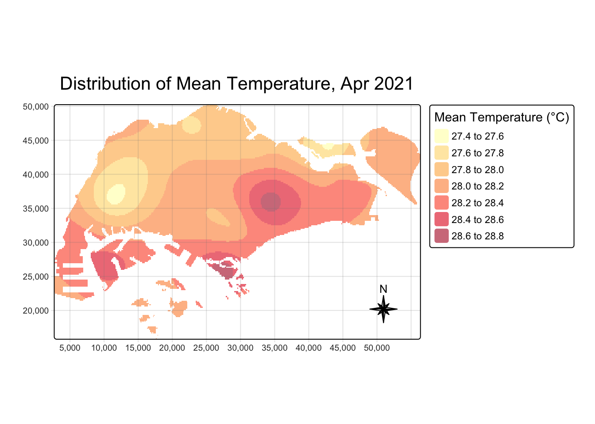
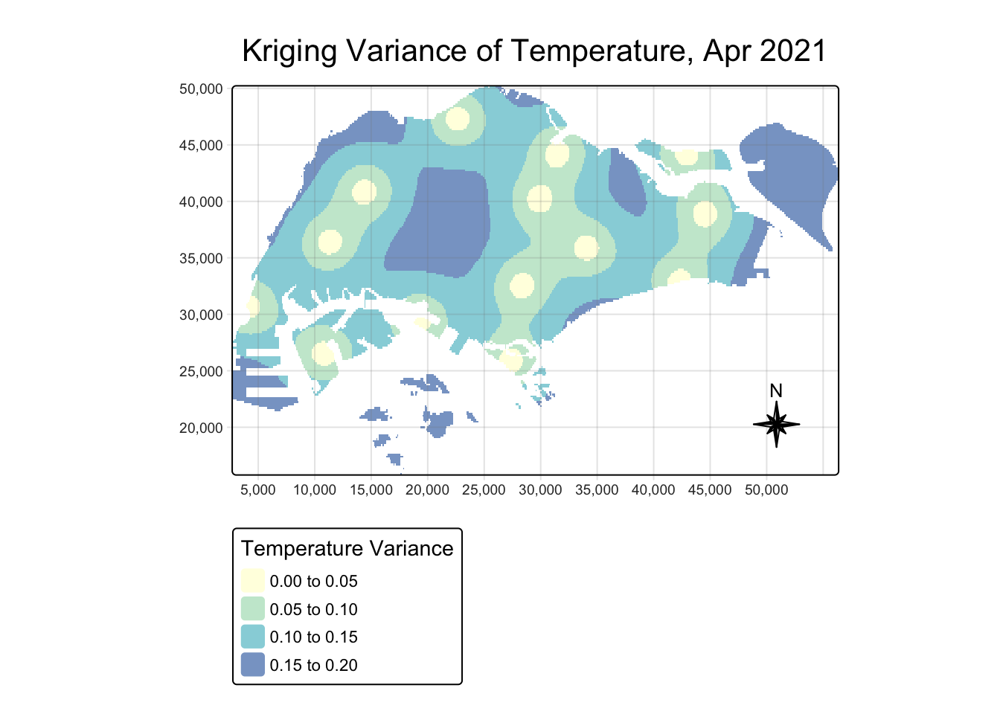
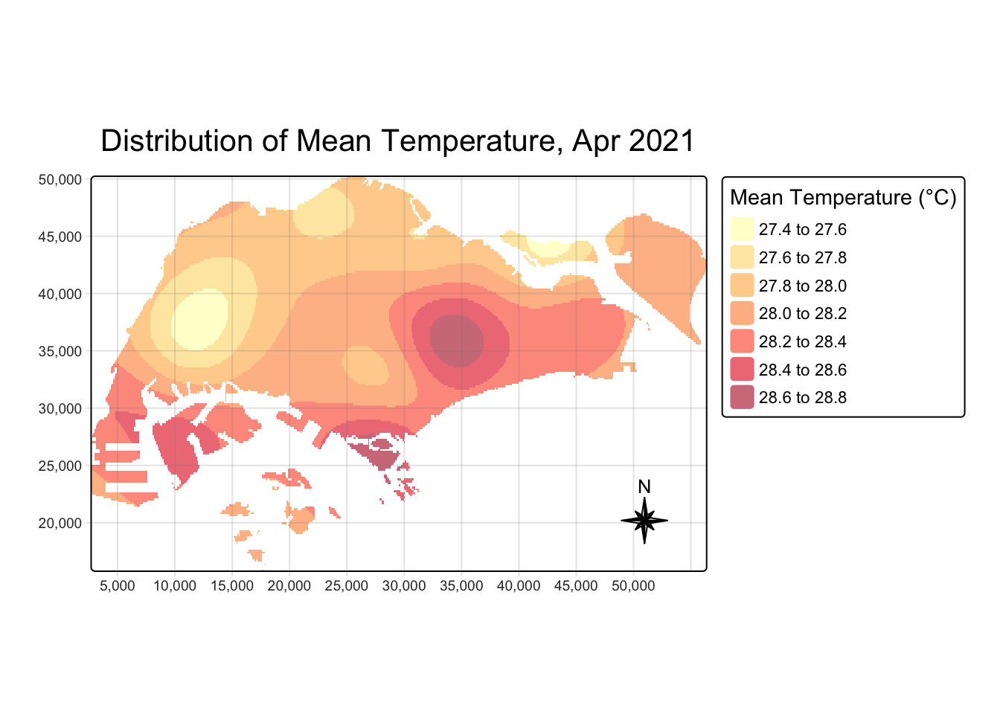
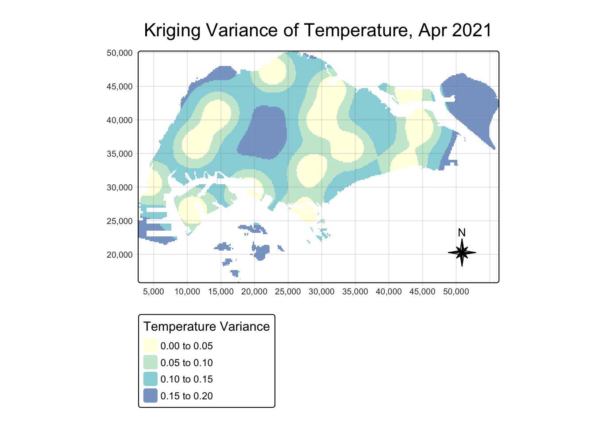
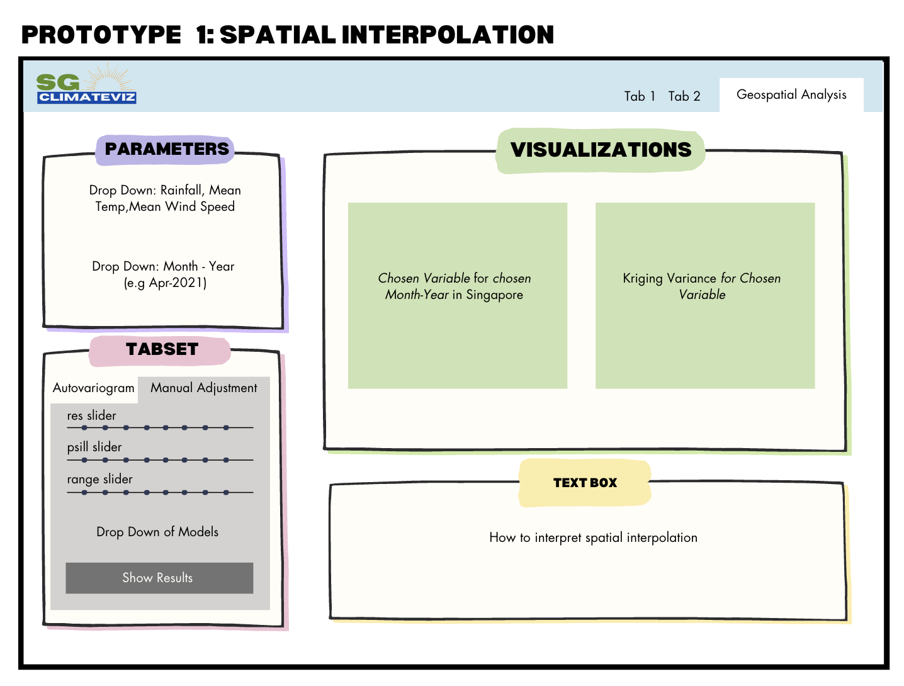
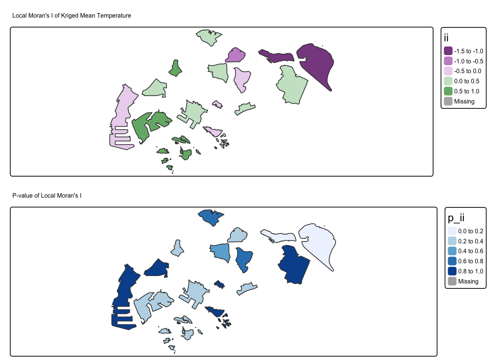
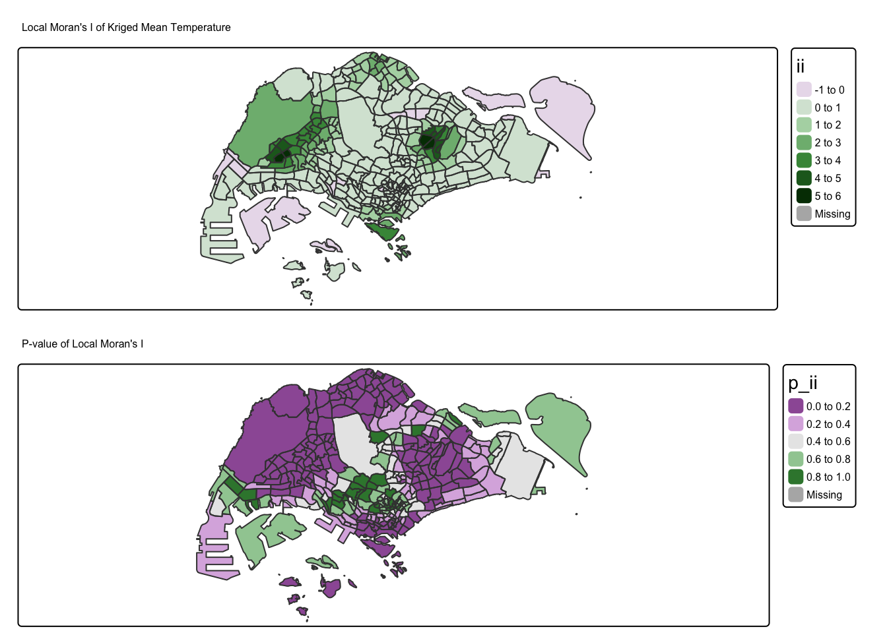
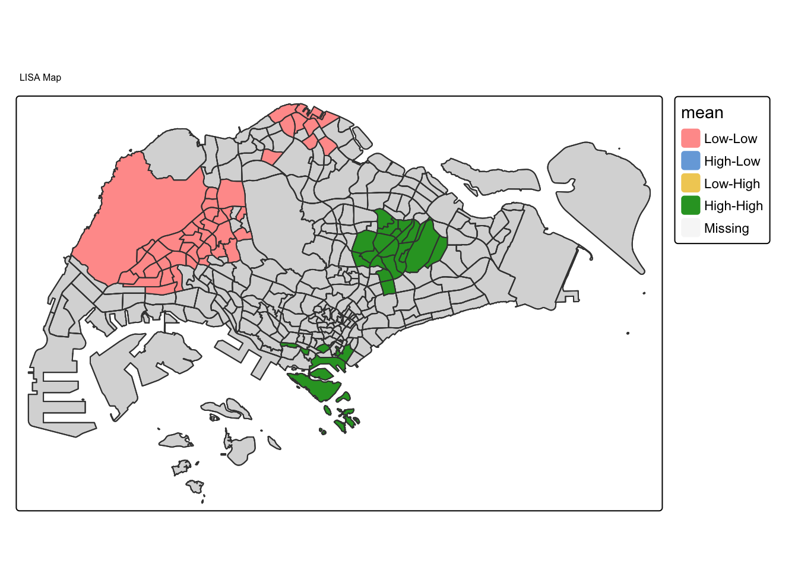
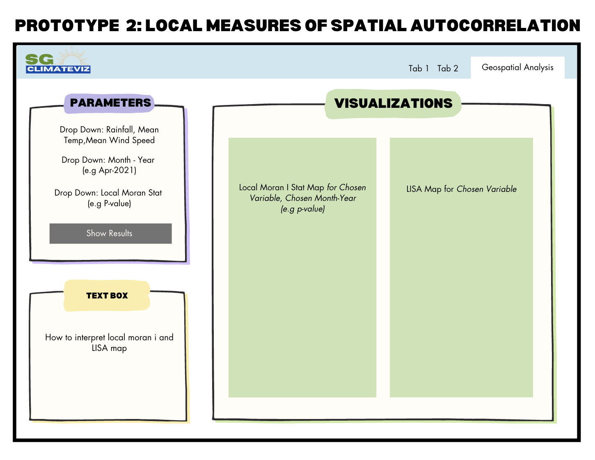

pacman::p_load(tidyverse,SmartEDA,sf,sfdep,plotly,tmap,terra,gstat,automap)Geospatial Prototypes
R Packages Used
| Package | Explanation |
|---|---|
| tidyverse | to efficiently manipulate and clean data, utilizing functions from packages like dplyr and tidyr for data wrangling |
| SmartEDA | to help summarize dataset by providing insights such as missing values |
| sf | for easy manipulation of spatial objects and performing geospatial analysis |
| plotly | for dynamically exploring climate trends over time |
| terra | for handling raster data and performing geospatial analysis in R |
| gstat | for geostatistical modeling, including functions for spatial interpolation, variogram modeling, and kriging |
| automap | to simplifies the process of spatial interpolation by automating model selection, variogram fitting, and kriging |
Aspatial Data Wrangling
Importing the Data
We import the scraped data by using read_csv from readr package.
weather<- read_csv("data/combined_weather_data.csv")We will see the format of the imported data and check if there are any missing values using ExpData from SmartEDA package.
Complete cases shows us if there are missing values. 100% means there is no missing values.
weather %>%
ExpData(type=1) Descriptions Value
1 Sample size (nrow) 446491
2 No. of variables (ncol) 16
3 No. of numeric/interger variables 3
4 No. of factor variables 0
5 No. of text variables 13
6 No. of logical variables 0
7 No. of identifier variables 0
8 No. of date variables 0
9 No. of zero variance variables (uniform) 0
10 %. of variables having complete cases 25% (4)
11 %. of variables having >0% and <50% missing cases 56.25% (9)
12 %. of variables having >=50% and <90% missing cases 18.75% (3)
13 %. of variables having >=90% missing cases 0% (0)This further break down by variables.
weather %>%
ExpData(type=2) Index Variable_Name Variable_Type Sample_n Missing_Count
1 1 Station character 446491 0
2 2 Year numeric 445641 850
3 3 Month numeric 445641 850
4 4 Day numeric 445641 850
5 5 Daily Rainfall Total (mm) character 446491 0
6 6 Highest 30 min Rainfall (mm) character 173989 272502
7 7 Highest 60 min Rainfall (mm) character 173989 272502
8 8 Highest 120 min Rainfall (mm) character 173989 272502
9 9 Mean Temperature (°C) character 446491 0
10 10 Maximum Temperature (°C) character 446256 235
11 11 Minimum Temperature (°C) character 446244 247
12 12 Mean Wind Speed (km/h) character 446491 0
13 13 Max Wind Speed (km/h) character 446217 274
14 14 Highest 30 Min Rainfall (mm) character 272502 173989
15 15 Highest 60 Min Rainfall (mm) character 272502 173989
16 16 Highest 120 Min Rainfall (mm) character 272502 173989
Per_of_Missing No_of_distinct_values
1 0.000 63
2 0.002 21
3 0.002 12
4 0.002 31
5 0.000 1478
6 0.610 477
7 0.610 609
8 0.610 719
9 0.000 106
10 0.001 159
11 0.001 116
12 0.000 326
13 0.001 576
14 0.390 414
15 0.390 545
16 0.390 637Renaming Variables
Variable names will be renamed for consistency and ease of analysis. For instance, “Daily Rainfall Total (mm)” will be renamed to “DailyRainfall”.
colnames(weather) <- c("Station", "Year", "Month", "Day",
"DailyRainfall", "Highest30minRainfall.x","Highest60minRainfall.x","Highest120minRainfall.x",
"MeanTemperature",
"MaxTemperature", "MinTemperature",
"MeanWindSpeed", "MaxWindSpeed",
"Highest30minRainfall.y","Highest60minRainfall.y","Highest120minRainfall.y")Date Field
Now we must ensure that Year, Month and Day fields are represented as numeric and combined as Date column by using as.Date.
weather <- weather %>%
mutate(
Year = as.numeric(Year),
Month = as.numeric(Month),
Day = as.numeric(Day),
Date = as.Date(paste(Year, Month, Day, sep = "-"), format = "%Y-%m-%d")
)Merging Columns
The columns Highest30minRainfall.x and Highest30minRainfall.y need to be merged into a single column. Whenever one of these columns has an NA value, the other column will have a valid value, meaning that together they form the complete dataset.
# Merge the columns and replace any remaining NA or "-" with 0
weather <- weather %>%
mutate(
Highest30minRainfall = coalesce(`Highest30minRainfall.x`, `Highest30minRainfall.y`),
Highest60minRainfall = coalesce(`Highest60minRainfall.x`, `Highest60minRainfall.y`),
Highest120minRainfall = coalesce(`Highest120minRainfall.x`, `Highest120minRainfall.y`)
) %>%
# Convert "-" to NA, then replace NA with 0
mutate(
Highest30minRainfall = as.numeric(Highest30minRainfall),
Highest30minRainfall = ifelse(is.na(Highest30minRainfall), 0, Highest30minRainfall),
Highest60minRainfall = as.numeric(Highest60minRainfall),
Highest60minRainfall = ifelse(is.na(Highest60minRainfall), 0, Highest60minRainfall),
Highest120minRainfall = as.numeric(Highest120minRainfall),
Highest120minRainfall = ifelse(is.na(Highest120minRainfall), 0, Highest120minRainfall)
) %>%
# Drop the original columns
select(-c(`Highest30minRainfall.x`, `Highest30minRainfall.y`,
`Highest60minRainfall.x`, `Highest60minRainfall.y`,
`Highest120minRainfall.x`, `Highest120minRainfall.y`))Converting data type
Upon inspecting the dataset, we observed that certain columns, such as Daily Rainfall Total (mm) and Mean Temperature (°C), were incorrectly classified as character variables instead of numeric. To ensure accurate analysis, these columns will be converted to numeric data types.
# Convert columns 5 to 10 to numeric
weather[, 5:10] <- lapply(weather[, 5:10], function(x) {
as.numeric(x) # Convert to numeric
})Calculate Columns
weather <- weather %>%
group_by(Station) %>%
mutate(
MonthlyRainfall = sum(DailyRainfall, na.rm = TRUE)
) %>%
ungroup()Remove rows with no date
Rows with no date will not be helpful for our analysis in later sections. Therefore, we will be removing these rows.
weather<- weather[!is.na(weather$Date), ]Converting aspatial data into geospatial data
First, we will import station.csv which contains the longitude and latitude of each of the stations from our scraped data. We extracted this from the same website.
stations<- read_csv("data/stations.csv")Left join each station’s longitude/latitude data to weather dataframe by using the common column “Station.”
weather <- stations %>% left_join(weather, by = c("Station"))Convert to sf using sf package. svy21 is the official projected coordinates of Singapore. 3414 is the EPSG code of svy21.
weather_sf <- st_as_sf(weather,
coords = c("Longitude",
"Latitude"),
crs= 4326) %>%
st_transform(crs = 3414)Extract Data for Geospatial Analysis
Set Timeframe
First we filter the dataset from Janurary 2021 to April 2024 since there are the most data recorded during these months, using the code chunk below.
Shiny App Note
This will be only used later for development of Shiny App prototype!
weather_filtered <- weather_sf %>%
filter((Year > 2021 | (Year == 2021 & Month >= 1)) &
(Year < 2024 | (Year == 2024 & Month <= 4)))We then save it as a rds file using write_rds and read_rds to load it.
write_rds(weather_filtered, "data/rds/weather_filtered.rds")weather_filtered <- read_rds("data/rds/weather_filtered.rds")Which Month has most extreme weather?
Shiny App Note
For the purpose of this take-home exercise, we will focus on one month. Users will be able to choose different Months and Years in Shiny app.
To see which month is the most interesting to focus on we determine the month with the most extremeweather conditions based on three key factors from our dataframe. We created a new variable to measure the extremeness (‘ExtremeIndex’) by finding the following:
Total Monthly Rainfall → Measures overall precipitation, indicating wet/extreme months.
Mean of Temperature Variance → Measures temperature fluctuations (Max - Min), capturing extreme hot/cold changes.
Max of Highest Wind Speed → Captures the strongest winds, which indicate stormy or extreme conditions.
weather_extreme <- weather %>%
group_by(Year, Month) %>%
summarise(
MonthlyRainfall = sum(DailyRainfall, na.rm = TRUE),
TempVariance = mean(MaxTemperature-MinTemperature, na.rm = TRUE),
MaxWindSpeed = max(MaxWindSpeed, na.rm = TRUE)
) %>%
ungroup() %>%
mutate(ExtremeIndex = scale(MonthlyRainfall) + scale(TempVariance) + scale(MaxWindSpeed))
most_extreme_month <- weather_extreme %>% filter(ExtremeIndex == max(ExtremeIndex))
p <- ggplot(weather_extreme, aes(x = as.Date(paste(Year, Month, "01", sep = "-")), y = ExtremeIndex)) +
geom_line(color = "black", size = 0.5) +
geom_point(aes(text = paste("Month:", Month, Year, "<br>Extreme Index:", round(ExtremeIndex, 2)))) +
labs(title = "Extreme Weather Index Over Time",
x = "Time (Month)",
y = "Extreme Weather Index") +
theme_minimal()
ggplotly(p, tooltip = "text")Month Data Extraction
We found that April 2021 had the most extreme weather. Therefore, we will extract this month for deeper insights with geospatial analysis ( for the purpose of this take-home exercise).
We keep the stations that has data for all three fields throughout our time-series data.
weather_month <- weather_filtered %>%
filter(Year == 2021, Month == 4) %>%
group_by(Station) %>%
summarise(
MonthlyRainfall = sum(DailyRainfall, na.rm = TRUE),
MonthlyMeanTemp = mean(MeanTemperature, na.rm = TRUE),
MonthlyMeanWindSpeed = mean(MeanWindSpeed, na.rm = TRUE)
) %>%
ungroup()
keepstations <- c("Admiralty", "Ang Mo Kio", "Changi","Choa Chu Kang (South)","East Coast Parkway","Jurong (West)","Jurong Island","Newton","Pasir Panjang","Pulau Ubin","Seletar","Sentosa Island","Tai Seng","Tuas South")
weather_month<- weather_month%>%
filter(Station %in% keepstations)We save it in the same way as a rds file.
write_rds(weather_month, "data/rds/weather_month.rds")weather_month <- read_rds("data/rds/weather_month.rds")Geospatial Data
Import the geospatial data using st_read and then transform it to Singapore’s coordinate reference system (CRS) 3414 using the st_transform function from the sf package.
mpsz2019 <- st_read(dsn = "data/geospatial",
layer = "MPSZ-2019") %>%
st_transform(crs = 3414)Reading layer `MPSZ-2019' from data source
`/Users/seesarhlakyi/Desktop/ssrhk/VA Project/isss608_Jan25_Group7/Prototypes/data/geospatial'
using driver `ESRI Shapefile'
Simple feature collection with 332 features and 6 fields
Geometry type: MULTIPOLYGON
Dimension: XY
Bounding box: xmin: 103.6057 ymin: 1.158699 xmax: 104.0885 ymax: 1.470775
Geodetic CRS: WGS 84We save this for later use.
write_rds(mpsz2019, "data/rds/mpsz2019.rds")mpsz2019 <- read_rds("data/rds/mpsz2019.rds")Spatial Interpolation
Spatial interpolation is a critical technique in geospatial analysis, especially when dealing with unsampled locations. In the case of the SG ClimateViz project, there are many areas where weather stations are missing or sparse, making it impossible to directly obtain weather-related metrics such as monthly rainfall for certain regions. Spatial interpolation allows us to estimate these missing values by leveraging the known data points from nearby locations.
Data Preparation
We need create a grid data object by using rast() of terra package as shown in the cod chunk below.
grid <- terra::rast(mpsz2019,
nrows = 200,
ncols = 500)
gridclass : SpatRaster
dimensions : 200, 500, 1 (nrow, ncol, nlyr)
resolution : 107.4578, 172.5381 (x, y)
extent : 2667.538, 56396.44, 15748.72, 50256.33 (xmin, xmax, ymin, ymax)
coord. ref. : SVY21 / Singapore TM (EPSG:3414) Next, a list called xy will be created by using xyFromCell() of terra package.
xy <- terra::xyFromCell(grid,
1:ncell(grid))
head(xy) x y
[1,] 2721.267 50170.07
[2,] 2828.725 50170.07
[3,] 2936.183 50170.07
[4,] 3043.640 50170.07
[5,] 3151.098 50170.07
[6,] 3258.556 50170.07We will create a data frame called coop with prediction/simulation locations by using the code chunk below.
coop <- st_as_sf(as.data.frame(xy),
coords = c("x", "y"),
crs = st_crs(mpsz2019))
coop <- st_filter(coop, mpsz2019)
head(coop)Simple feature collection with 6 features and 0 fields
Geometry type: POINT
Dimension: XY
Bounding box: xmin: 25072.49 ymin: 50170.07 xmax: 25717.24 ymax: 50170.07
Projected CRS: SVY21 / Singapore TM
geometry
1 POINT (25072.49 50170.07)
2 POINT (25179.95 50170.07)
3 POINT (25287.41 50170.07)
4 POINT (25502.32 50170.07)
5 POINT (25609.78 50170.07)
6 POINT (25717.24 50170.07)Manual Variogram
Kriging is one of several methods that use a limited set of sampled data points to estimate the value of a variable over a continuous spatial field. Since monthly rainfall over Singapore varies across a random spatial field, we will use kriging.
Let’s explore both manually inputting variogram paramaters and autofitting it. The following steps and code chunk was used to perform kriging.
# The empirical variogram
v_temp <- variogram(MonthlyMeanTemp ~ 1, data = weather_month)
# Manually fit the variogram model
fv_temp <- fit.variogram(v_temp, model = vgm(psill = 0.5, model = "Sph", range = 5000, nugget = 0.1))
# Perform Kriging
k_temp <- gstat(formula = MonthlyMeanTemp ~ 1, data = weather_month, model = fv_temp)
# Create prediction grid and perform kriging
resp_temp <- predict(k_temp, coop)[using ordinary kriging]# Extract coordinates and predictions
resp_temp$x <- st_coordinates(resp_temp)[,1]
resp_temp$y <- st_coordinates(resp_temp)[,2]
resp_temp$pred <- resp_temp$var1.pred
# Kriging Variance
resp_temp$variance <- resp_temp$var1.var
# Create raster layer for predicted values
kpred_temp <- terra::rasterize(resp_temp, grid, field = "pred")
# Create raster layer for Kriging Variance
kpred_temp_variance <- terra::rasterize(resp_temp, grid, field = "variance")tm_shape(kpred_temp) +
tm_raster(col_alpha = 0.6,
col.scale = tm_scale(values = "brewer.yl_or_rd"),
col.legend = tm_legend(title = "Mean Temperature (°C)")) +
tm_title("Distribution of Mean Temperature, Apr 2021") +
tm_layout(frame = TRUE) +
tm_compass(type = "8star", size = 2) +
tm_grid(alpha = 0.2)
tm_shape(kpred_temp_variance) +
tm_raster(col_alpha = 0.6,
col.scale = tm_scale(values = "brewer.yl_gn_bu"),
col.legend = tm_legend(title = "Temperature Variance")) +
tm_title("Kriging Variance of Temperature, Apr 2021") +
tm_layout(frame = TRUE) +
tm_compass(type = "8star", size = 2) +
tm_grid(alpha = 0.2)
AutoVariogram
Next, we explore autofitting by using autofitVariogram. The rest of the steps are the same as the previous section.
# Kriging for Monthly Mean Temperature
v_temp <- autofitVariogram(MonthlyMeanTemp ~ 1, weather_month)
k_temp <- gstat(formula = MonthlyMeanTemp ~ 1,
model = v_temp$var_model,
data = weather_month)
# Create prediction grid
resp_temp <- predict(k_temp, coop)[using ordinary kriging]# Extract coordinates
resp_temp$x <- st_coordinates(resp_temp)[,1]
resp_temp$y <- st_coordinates(resp_temp)[,2]
resp_temp$pred <- resp_temp$var1.pred
# Kriging Variance
resp_temp$variance <- resp_temp$var1.var
# Create raster layer
kpred_temp <- terra::rasterize(resp_temp, grid, field = "pred")
# Kriging Variance Raster
kpred_temp_variance <- terra::rasterize(resp_temp, grid, field = "variance")tmap_mode("plot")
tm_shape(kpred_temp) +
tm_raster(col_alpha = 0.6,
col.scale = tm_scale(values = "brewer.yl_or_rd"),
col.legend = tm_legend(title = "Mean Temperature (°C)")) +
tm_title("Distribution of Mean Temperature, Apr 2021") +
tm_layout(frame = TRUE) +
tm_compass(type = "8star", size = 2) +
tm_grid(alpha = 0.2)
tm_shape(kpred_temp_variance) +
tm_raster(col_alpha = 0.6,
col.scale = tm_scale(values = "brewer.yl_gn_bu"),
col.legend = tm_legend(title = "Temperature Variance")) +
tm_title("Kriging Variance of Temperature, Apr 2021") +
tm_layout(frame = TRUE) +
tm_compass(type = "8star", size = 2) +
tm_grid(alpha = 0.2)
Insights for Mean Temp
1. Spatial Interpolation of Mean Temperature
Both maps of Mean Temperature Distribution appear visually identical, indicating that the temperature predictions are not significantly affected by variogram parameter adjustments. This suggests that the temperature trends are well captured by both approaches.
2. Kriging Variance Comparison
Auto Variogram:
- The kriging variance is more evenly distributed, with slightly lower uncertainty in central regions.The pattern of variance seems more smooth, likely due to default parameters optimizing a general fit.
Manual Variogram Adjustments:
The variance map shows more pronounced patches of uncertainty in different locations.
The kriging variance is more localized, suggesting that the manual tuning has affected the spatial relationships between points.
This could indicate that the manually chosen sill, range, and model parameters have led to more refined spatial dependence assumptions.
Prototype 1: Spatial Interpolation
Shiny UI
The following is the sketch of planned Shiny App user interface
Shiny App Prototype 1
To ensure the components are compatible and ready for Shiny App development, I will be creating a mini Shiny App for the analysis above.
Note
Note that this is a prototype and not the actual dimensions that will be shown in the Shiny app. The plots will be bigger. The actual dimensions may be viewed here:https://sshk.shinyapps.io/Take-Home3/
Local Measure of Spatial Autocorrelation
The next steps involve calculating Local Moran’s I and visualizing the LISA (Local Indicators of Spatial Association) map. These methods will help us understand the spatial patterns of Mean Temperature, like clustering of high or low values.
Data Prep
Before doing our analysis, we must first filter for Jan 2021 to Apr 2024 (for Shiny App development) and just Apr 2021 (for this takehome exercise). We will do this on the dataframe that has not been converted to sf. For this section, we will only do this by left joining with the boundary polygons.
weather <- weather %>%
filter((Year > 2021 | (Year == 2021 & Month >= 1)) &
(Year < 2024 | (Year == 2024 & Month <= 4)))
weather_my <- weather %>%
filter(Year == 2021, Month == 4)%>%
ungroup()
keepstations <- c("Admiralty", "Ang Mo Kio", "Changi","Choa Chu Kang (South)","East Coast Parkway","Jurong (West)","Jurong Island","Newton","Pasir Panjang","Pulau Ubin","Seletar","Sentosa Island","Tai Seng","Tuas South")
weather_my<- weather_my%>%
filter(Station %in% keepstations)Import the boundary polygons using st_read and transform it to Singapore’s coordinate reference system (CRS) 3414 using the st_transform. Ensure that there is one common column, “Station”, and also ensure that the names of the Stations match that of weather_my dataframe that we just prepared.
mpsz <- st_read(dsn = "data/geospatial",
layer = "MPSZ-2019") %>%
st_transform(crs = 3414) %>%
rename(Station = PLN_AREA_N) %>%
mutate(Station = ifelse(Station == "SEMBAWANG", "Admiralty", Station)) %>%
mutate(Station = ifelse(Station == "ANG MO KIO", "Ang Mo Kio", Station)) %>%
mutate(Station = ifelse(Station == "CHANGI", "Changi", Station)) %>%
mutate(Station = ifelse(Station == "CHOA CHU KANG", "Choa Chu Kang (South)", Station))%>%
mutate(Station = ifelse(Station == "MARINE PARADE", "East Coast Parkway", Station))%>%
mutate(Station = ifelse(Station == "JURONG WEST", "Jurong (West)", Station))%>%
mutate(Station = ifelse(Station == "WESTERN ISLANDS", "Jurong Island", Station))%>%
mutate(Station = ifelse(Station == "NEWTON", "Newton", Station))%>%
mutate(Station = ifelse(Station == "QUEENSTOWN", "Pasir Panjang", Station))%>%
mutate(Station = ifelse(Station == "NORTH-EASTERN ISLANDS", "Pulau Ubin", Station))%>%
mutate(Station = ifelse(Station == "SELETAR", "Seletar", Station))%>%
mutate(Station = ifelse(Station == "SOUTHERN ISLANDS", "Sentosa Island", Station))%>%
mutate(Station = ifelse(Station == "HOUGANG", "Tai Seng", Station))%>%
mutate(Station = ifelse(Station == "TUAS", "Tuas South", Station))Reading layer `MPSZ-2019' from data source
`/Users/seesarhlakyi/Desktop/ssrhk/VA Project/isss608_Jan25_Group7/Prototypes/data/geospatial'
using driver `ESRI Shapefile'
Simple feature collection with 332 features and 6 fields
Geometry type: MULTIPOLYGON
Dimension: XY
Bounding box: xmin: 103.6057 ymin: 1.158699 xmax: 104.0885 ymax: 1.470775
Geodetic CRS: WGS 84Left join the boundary data into weather_my using the common column.
weather_with_zones <- left_join(weather_my,mpsz)Aggregate columns by calculating MonthlyRainfall, MonthlyMeanTemp, and MonthlyMeanWindSpeed for each Station for April 2021. While aggregating, we also ensure that there is only one single polygon for each station using st_union. Lastly, we convert it as sf using st_as_sf.
weather_with_zones_single_polygon <- weather_with_zones %>%
group_by(Station) %>%
summarise(
MonthlyRainfall = sum(DailyRainfall, na.rm = TRUE),
MonthlyMeanTemp = mean(MeanTemperature, na.rm = TRUE),
MonthlyMeanWindSpeed = mean(MeanWindSpeed, na.rm = TRUE),
geometry = st_union(geometry),
.groups = "drop"
)
weather_with_zones_single_polygon <- st_as_sf(weather_with_zones_single_polygon)Raw Data - Before Spatial Interpolation
Let’s first explore local measures of the raw data before doing any spatial interpolation.
Recall that only 14 stations have recorded data available for all three variables of interest so there will be missing parts. Let’s visualize Local Moran I for the raw data with 14 stations present.
Step 1: Compute centroids from prepared data.
weather_centroids <- st_centroid(weather_with_zones_single_polygon)
knn <- st_knn(weather_centroids, k = 2)
knn_weights <- st_weights(knn, style = "W")Step 2: Calculate Local Moran’s I for the predicted values and merge the Local Moran’s I results back into the sf object
local_moran_res <- local_moran(weather_centroids$MonthlyMeanTemp,
knn,
knn_weights,
nsim = 99)
local_moran_df <- as.data.frame(local_moran_res)
weather_lisa <- weather_with_zones_single_polygon %>%
mutate(ii = local_moran_df$ii,
p_ii_sim = local_moran_df$p_ii_sim,
p_ii = local_moran_df$p_ii,
mean = local_moran_df$mean,
.before = 1) Step 3: Plot the Local Moran’s I map and P-value significance map
tmap_mode("plot")
# Local Moran’s I Map
plot1 <- tm_shape(weather_lisa) +
tm_fill("ii",
fill.scale = tm_scale(palette = "RdBu", midpoint = 0),
legend.show = TRUE) +
tm_borders() +
tm_title("Local Moran's I of Kriged Mean Temperature", size = 0.5) +
tm_legend(text.size = 0.5)
# P-value significance map
plot2 <- tm_shape(weather_lisa) +
tm_fill("p_ii",
fill.scale = tm_scale(breaks = c(0, 0.001, 0.01, 0.05, 1),
labels = c("0.001", "0.01", "0.05", "Not sig")),
palette = "Blues",
midpoint = NA) +
tm_borders() +
tm_title("P-value of Local Moran's I", size = 0.5) +
tm_legend(text.size = 0.5)
tmap_arrange(plot1, plot2)
We can see from the above plots that it is a broken map with only a few stations present. There is a need to perform spatial interpolation for areas with no recorded data.
After Spatial Interpolation
As we did before, we will perform spatial interpolation in the following steps:
Step 1: Convert weather station data to sf object by using st_as_sf
weather_sf <- st_as_sf(weather_with_zones_single_polygon, crs = st_crs(mpsz))Step 2: Fit Exponential variogram model using variogram
variogram_model <- variogram(MonthlyMeanTemp ~ 1, weather_sf)
fit_model <- fit.variogram(variogram(MonthlyMeanTemp ~ 1, weather_sf), model = vgm("Exp"))Step 3: Apply Ordinary Kriging with the new model and convert kriging result to sf
kriging_result <- krige(MonthlyMeanTemp ~ 1, weather_sf, mpsz, model = fit_model)[using ordinary kriging]kriged_sf <- st_as_sf(kriging_result)Note that the kriging output is in polygons.
Step 4: Create centroids for the polygons in mpsz2019. Use KNN (K-Nearest Neighbors, this is set as 3) on centroids to compute spatial weights and compute weights for KNN (using inverse distance as weights).
mpsz_centroids <- st_centroid(mpsz)
knn_result <- st_knn(mpsz_centroids, k = 3)
knn_weights <- st_weights(knn_result, style = "W")Step 5: Calculate Local Moran’s I using KNN weights (with 99 simulations) and add Local Moran’s I results to the kriged polygons
set.seed(1234)
local_moran_res <- local_moran(kriged_sf$var1.pred,
knn_result,
knn_weights,
nsim = 99)
local_moran_df <- as.data.frame(local_moran_res)
kriged_sf <- kriged_sf %>%
mutate(
ii = local_moran_df$ii,
p_ii_sim = local_moran_df$p_ii_sim,
p_ii = local_moran_df$p_ii,
mean = local_moran_df$mean
)Step 6: Plot the Local Moran’s I map and P-value significance map using tmap.
tmap_mode("plot")
# Local Moran's I Map for mean temperature
plot1 <- tm_shape(kriged_sf) +
tm_fill("ii",
fill.scale = tm_scale(midpoint = 0, palette = "brewer.rd_bu"),
legend.show = TRUE) +
tm_borders() +
tm_title("Local Moran's I of Kriged Mean Temperature", size = 0.5) +
tm_legend(text.size = 0.5)
# P-value significance map
plot2 <- tm_shape(kriged_sf) +
tm_fill("p_ii",
fill.scale = tm_scale(breaks = c(0, 0.001, 0.01, 0.05, 1),
labels = c("0.001", "0.01", "0.05", "Not sig"),
palette = "brewer.blues"),
midpoint = NA) +
tm_borders() +
tm_title("P-value of Local Moran's I", size = 0.5) +
tm_legend(text.size = 0.5)
tmap_arrange(plot1, plot2)
Insights from Local Moran I
1. Local Moran’s I: shows clusters and outliers of mean temperature based on spatial autocorrelation.
Darker green areas (higher Moran’s I values) indicate strong positive spatial autocorrelation, meaning these regions have neighboring areas with similar temperature values.
Lighter green areas (lower Moran’s I values) suggest weaker spatial autocorrelation or more dispersed temperature patterns.
Light purple areas (negative Moran’s I values) might indicate potential spatial outliers where temperature values differ significantly from their neighbors.
Strong positive clusters (dark green) are seen in the northwest and central regions of Singapore, meaning these areas have consistently high or low mean temperatures.
The southern and eastern regions appear to have weaker spatial autocorrelation, suggesting more temperature variability or transition zones between different temperature regimes.
2. P-Value of Local Moran’s I: assesses the statistical significance of the Local Moran’s I results.
Purple areas (low p-values, <0.2) indicate strong evidence that spatial clustering is significant (i.e., temperature patterns are not random).
Green areas (higher p-values, >0.6) suggest weaker or non-significant spatial autocorrelation, meaning that any apparent clustering might be due to chance.
White areas (mid-range p-values, 0.4-0.6) indicate moderate evidence, suggesting inconclusive clustering.
The northern and central regions have significant clustering (dark purple), reinforcing that these areas show clear spatial dependence in temperature.
Some southwestern areas have higher p-values, meaning the detected clusters there might not be statistically significant.
Step 7: Plot LISA Map for significant Local Moran’s I results (p-value < 0.05) using tmap.
lisa_sig <- kriged_sf %>%
filter(p_ii_sim < 0.05)
tmap_mode("plot")
# LISA Map with polygon borders
tm_shape(kriged_sf) +
tm_polygons() +
tm_borders(fill_alpha = 0.5) +
tm_title(
text = "LISA Map",
size = 0.5 # Adjust title size
) +
tm_shape(lisa_sig) +
tm_fill("mean",
fill.scale = tm_scale(palette = "brewer.rd_bu", midpoint = 0),
legend.show = TRUE) +
tm_borders(fill_alpha = 0.4)
Insights from LISA map
1. High-High Clusters (Green Areas): These regions have high temperatures surrounded by high temperatures, indicating strong positive spatial autocorrelation.
Observed in:
Central Region (Bishan, Ang Mo Kio)
Southern coastal areas & islands (Sentosa, Southern Islands, possibly Marina South)
Implications:
The central region is likely experiencing an urban heat island (UHI) effect due to dense urbanization.
Coastal/southern clusters may be influenced by heat-retaining surfaces and lower vegetation cover.
2. Low-Low Clusters (Red Areas): These areas have low temperatures surrounded by low temperatures, forming another significant cluster.
Observed in:
- Northwestern Singapore (Lim Chu Kang, Kranji, parts of Woodlands and western regions)
Implications:
These areas tend to have more greenery, agricultural land, and water bodies, which contribute to cooling effects.
Less urban development may help moderate temperatures.
3. Non-Significant Areas (Gray): Most of the map is gray, meaning those regions do not show statistically significant clustering at the 0.05 level.
Temperature patterns in these areas are more randomly distributed or do not have strong local spatial dependence for the month of April 2021.
The lack of strong clustering could be due to mixed land use, variable urbanization, or insufficient local temperature contrast.
Unlike some LISA maps, there are no High-Low (blue) or Low-High (yellow) clusters for the month of April in 2021.
- This suggests no strong spatial outliers (i.e., no hot spots surrounded by cold spots or vice versa).The temperature distribution is more continuous.
Prototype 2: Local Measure of Spatial Autocorrelation
9.1 Shiny UI
The following is the sketch of planned Shiny App user interface

Shiny App Prototype 2
To ensure the components are compatible and ready for Shiny App development, I will be creating a mini Shiny App for the analysis above.
Note
Note that this is a prototype and not the actual dimensions that will be shown in the Shiny app. The plots will be bigger. The actual dimensions may be viewed here: https://sshk.shinyapps.io/proto2/